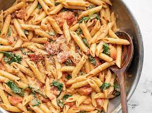

| pasta alferdo |
|---|
| oillll | watwrrr |
| vigtableee |
| pastaaaa |
| cheesss |
West of Termini there is a delightful settlement called Trabia.[15] Its ever-flowing streams propel a number of mills. Here there are huge buildings in the countryside where they make vast quantities of itriyya which is exported everywhere: to Calabria, to Muslim and Christian countries. Very many shiploads are sent.